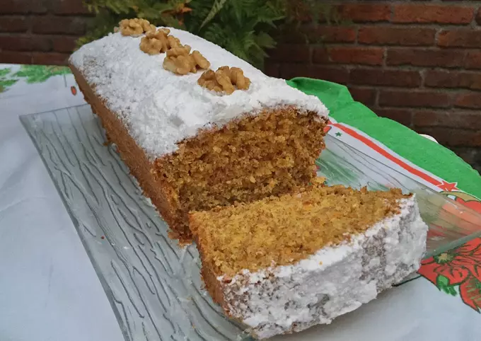

- Ingredientes:
- 200 grs harina integral
- 100 grs harina 0000
- 1 cda polvo de hornear
- 3/4 cdita canela en polvo
- 1/2 cdita nuez moscada en polvo
- Pizca sal
- 4 huevos
- 200 grs azúcar (blanco o cualquier otro)
- 1/4 taza aceite
- 1/4 taza jugo de limón (1 limón aprox.)
- Chorro esencia de vainilla
- 3 zanahorias medianas
- 100 grs nueces
- Rallar las zanahorias bien finas.
- En in bowl mezclar los secos con excepción del azúcar (harinas, polvo de hornear, canela y nuez moscada, pizca sal).
- En otro bowl batir los huevos y agregar el azúcar. Continuar batiendo hasta que la mezcla se espume y duplique.
- Agregar el aceite junto a la esencia de vainilla y al jugo de naranja (este sirve para darle humedad a cualquier preparación con harina integral ya que esta es muy seca).
- Agregar el bowl de los ingredientes sólidos junto a la zanahoria rallada fina y mezclar todo bien.
- En una tabla con un cuchillo grande partir las nueces en trozos medianos (yo dejé 5 para decorar después). Pasarlas por harina para que en el horno no se vayan todas a la base del budín e integrarla a la mezcla del budín con movimientos envolventes.
- Enmantecar y enharinar una budinera o tortera grande y verter la mezcla del budín.
- Mandar a horno a 180 grados durante 1 hora aprox.